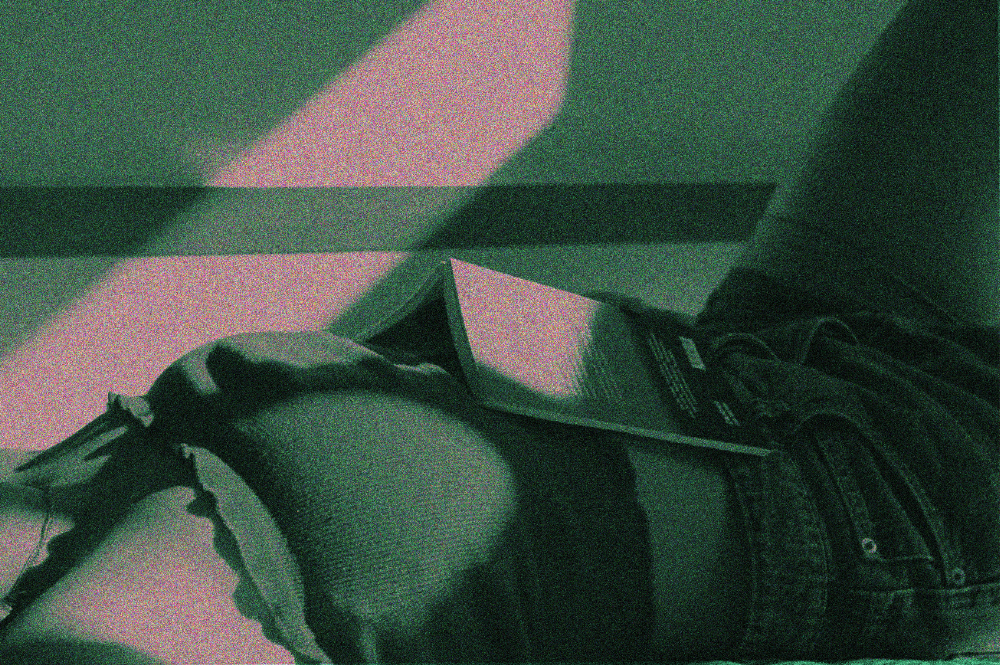
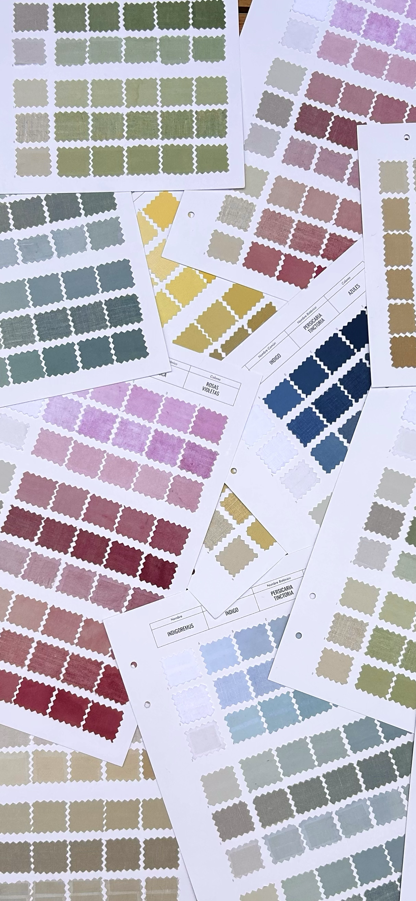
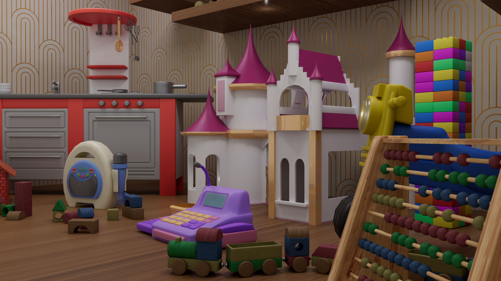
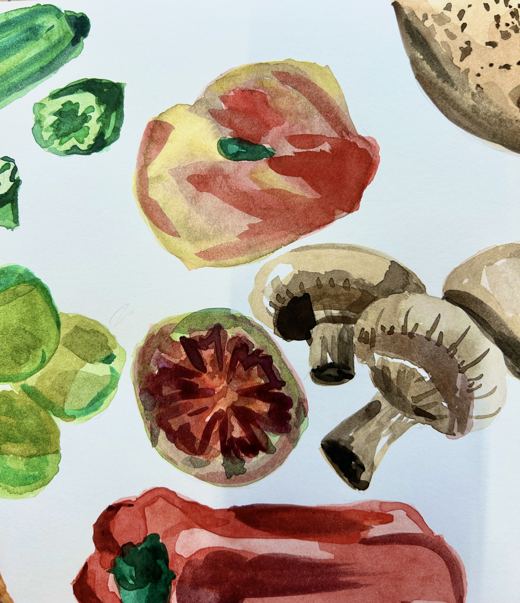

3D Diorama
A 3D built space representing a phisical composition.
A curated selection of my personal explorations, client collaborations and experimental creative projects — all in one place.
A 3D built space representing a phisical composition.

Small research on form and color.

Digitally manipulated postcards exploring perception.

Visual identity for university gardening club.

Special-edition book design.

Natural-dyed textile swatches.

3D toy storefront exploring nostalgia

Seasonal fruit calendar in watercolor.
This 3D diorama is a stylised reconstruction of my own room,
transformed into a personal space designed to explore light,
atmosphere, and emotional storytelling through composition. Rather
than aiming for realism, the project prioritises mood and
interpretation, using simplification and stylisation as expressive
tools.
The work focuses on color psychology, spatial rhythm, and
low-light ambience to evoke a calm, late-evening atmosphere. Lighting
is used as a narrative element, guiding the viewer's attention and
reinforcing a sense of intimacy and quietness. Subtle contrasts and
controlled shadows contribute to a contemplative mood, suggesting
moments of stillness and introspection.
Through careful arrangement of objects and intentional use of
color and light, the diorama translates a familiar environment into an
emotional landscape, highlighting how personal spaces can convey
memory, mood, and narrative beyond their physical form.
This project explores vinyl cover design through color, form, and
transparency, using interpolation and layered compositions to create a
sense of movement and visual progression. The graphic system is built
around overlapping shapes and transitional elements that suggest
transformation rather than static form.
The design investigates the tension between order and disorder,
balancing structured layouts with more organic and unpredictable
visual interactions. Transparency and color blending play a key role
in this process, allowing elements to intersect and evolve,
reinforcing the idea of gradual change.
Conceptually, the piece translates emotional growth and personal
development into a dynamic visual language, where movement becomes a
metaphor for personal evolution. The final outcome is a vinyl cover
design for the single Kids by Current Joys, aligning the visual
identity with the themes of growth, transition, and introspection
present in the music.
This project consists of a series of postcards created through digital
image manipulation as part of an editorial design campaign. Each piece
explores the relationship between color, light, and composition, using
visual alterations to challenge the viewer's perception.
Grain was intentionally added to introduce texture and
depth, softening the digital finish and reinforcing a tactile, almost
printed quality. Color plays a central role in shaping mood and
meaning, while controlled lighting and compositional decisions guide
the eye and suggest multiple readings of the same image.
Rather than aiming for a fixed narrative, the postcards embrace
ambiguity and subjectivity, encouraging personal interpretation and
highlighting how perception can shift depending on visual context and
individual experience.
This project explores the design and layout of a book conceived as part of a special-edition collection. The publication follows a shared grid system to create visual continuity across the series, reinforcing a unified editorial identity. In this case, the book presents a curated selection of short stories by Edgar Allan Poe, where structure, rhythm and typography support a cohesive and atmospheric reading experience.
This project consists of a textile swatch book made from natural fibres dyed with natural pigments, designed to present clients with a broad and realistic colour range achievable through these dyeing processes. The sample collection is structured around nine natural dyes, each applied across three fabric types: cotton, linen and gauze- and three original fabric colours: white, beige and grey. For each fabric and base colour, six dye intensities are displayed, allowing for a systematic exploration of tone, material and chromatic variation.
This project consists of a 3D toy storefront designed to evoke a sense
of nostalgia through composition, color, and lighting. The scene is
built around real childhood toys, using familiar forms and visual
references to trigger emotional memory.
The work focuses on 3D modeling and scene composition in Cinema
4D, carefully arranging each element within a fixed structural frame:
the storefront window. The original structure of the display was
provided and could not be modified, establishing clear spatial
constraints that guided all compositional decisions.
Within these limitations, the project explores balance, rhythm,
and visual hierarchy, using color relationships and controlled
lighting to enhance depth and atmosphere. The final result emphasizes
how composition within a defined frame can shape mood, narrative, and
viewer engagement.
Huertopia is a visual identity project developed for a university club
focused on collective cultivation and connection with nature. The club
brings together students who participate in gardening activities as a
way to promote sustainability, collaboration, and well-being within an
academic environment.
The identity is built around a logo that integrates the visual
language of Universidad Europea de Madrid, reinforcing the club's
institutional affiliation while maintaining its own character. Color
selection plays a key role in referencing the club's main activity,
drawing directly from natural and organic tones associated with
cultivation and growth.
Subtle formal decisions and small visual cues embedded in the
logo reflect the club's core values, using shape and structure to
suggest community, care, and balance. The result is a flexible visual
system that communicates both its educational context and its strong
connection to nature.
This project consists of a series of hand-drawn illustrations that
represent the year through fruits and vegetables, using seasonality as
a natural way to structure time. The calendar is organised by seasons,
months, and categories, allowing the presence of specific produce to
indicate the time of year.
Watercolor is used as the main medium, reinforcing an organic
and intuitive visual language connected to nature and growth. The
softness of the technique supports a calm and approachable reading of
the information, while subtle variations in color and texture reflect
the changing rhythms of the year.
Rather than relying on conventional numerical markers, the
calendar uses fruits and vegetables as visual indicators of time,
encouraging an alternative and more sensory understanding of seasonal
cycles.
I am Ana Callejón, a creative designer working across graphic, digital
and multimedia projects. This portfolio is a curated selection of
experiments, client work and personal explorations.
I'm a Graphic and Multimedia Design student currently based in Madrid,
after three formative years studying in Barcelona. My work is rooted
in visual communication — from brand identities to editorial design —
with a strong interest in typography, colour theory and the
intersection between digital and handcrafted processes.
My experience includes an internship at a design studio where I later
joined the team, freelance collaborations with clients, and volunteer
work supporting visual communication in different institutions.
Outside the digital space, I enjoy analog illustration, bookbinding
and craft-related projects that keep me connected to materials and
slower creative methods. Music and visual culture are ongoing
influences in my process. This portfolio brings together the projects
that have shaped my growth and direction as a designer.

If you want to collaborate, ask something, or just say hi, feel free to reach out at ana.callejonalen@gmail.com. Otherwise, leave your info here and I'll get back to you :)